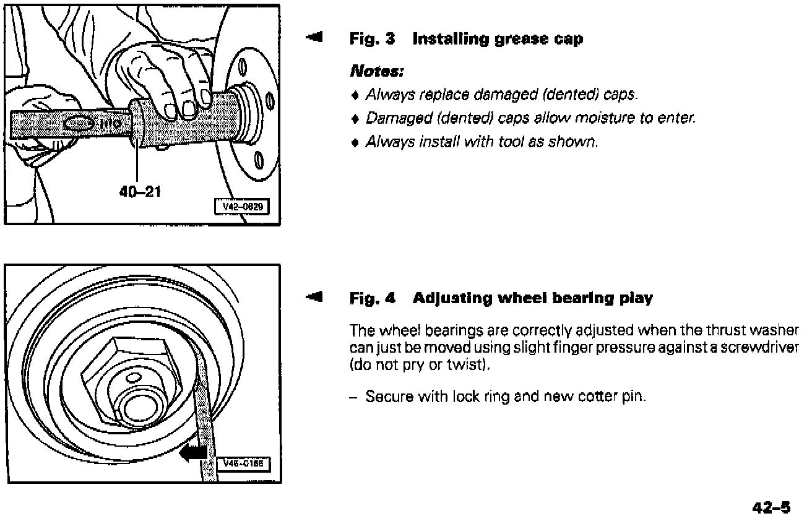
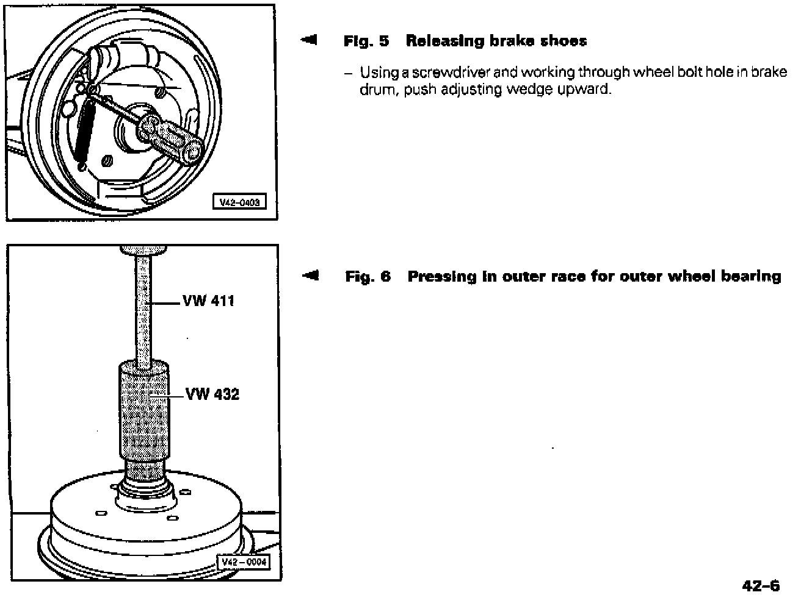

Drum Brakes - Wheel Bearing and Axle Servicing
Group: 42Number: 97-01
Date: Oct 14, 1997
File this Technical Bulletin in Repair Manual No.: W42 011 294 113B
Subject:
Wheel Bearing and Axle (Drum Brakes), Servicing
Model(s):
Golf, GTI, Jetta, Cabrio 1993 -->
Vehicles with drum brakes have a cover ring installed on the stub axle to protect the seal in the drum from contaminates.
The cover ring is similar to that used on vehicles with disc brakes.
A special tool is available to install the cover ring quickly and correctly. This tool can also be used to install the cover ring on vehicles with disc brakes.






These pages showing the cover ring and its installation with drum brakes replace the current procedure in the repair manual.